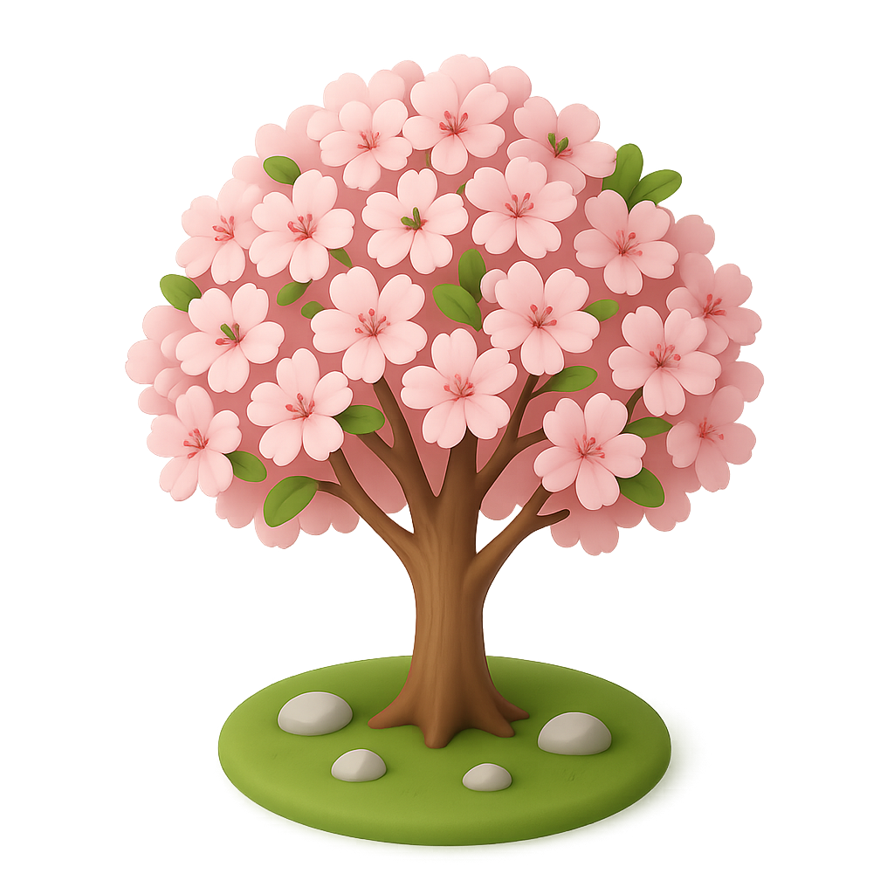
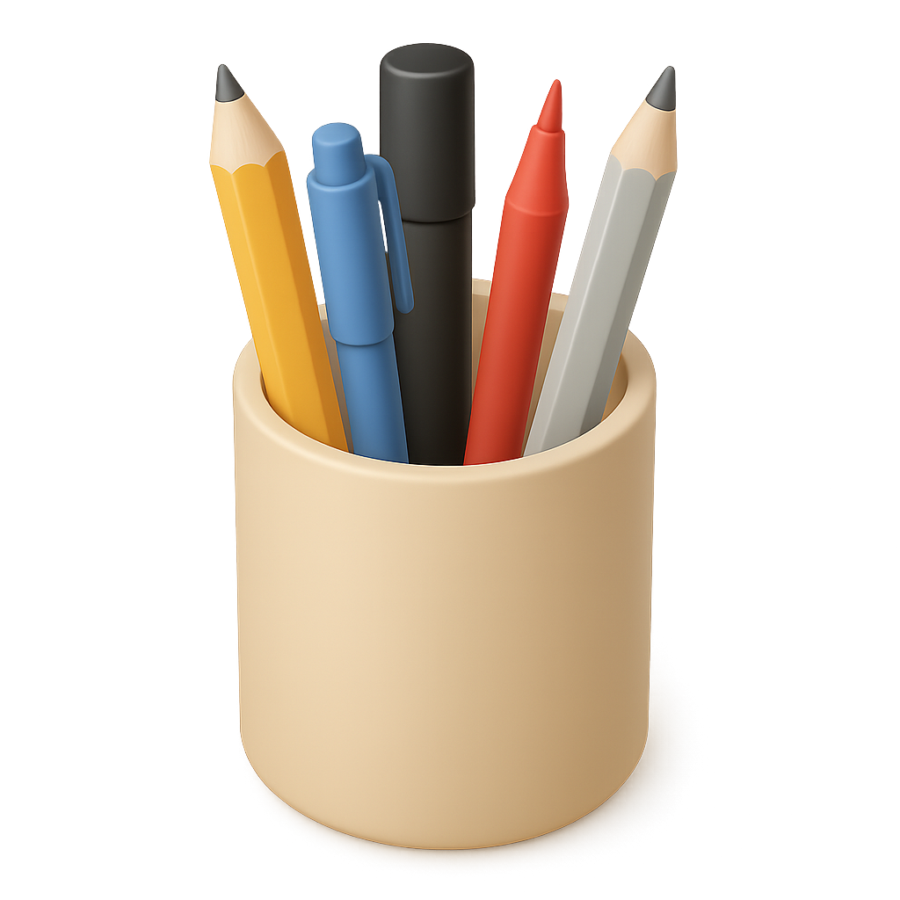

Inside the app
Six well-kept rooms.
One companion.
Most apps pull you in a dozen directions. Zain has six — chosen with care, laid out like the sections of a well-kept journal.

The RitualHabits
Streaks that don't shame. Checklists for the days that need scaffolding.
Read more → The LibraryReading
A shelf for every book you've touched, with the notes and passages you want to remember.
Read more →
The JournalNotes
Gratitude, reflection, lists, letters. A softer place than a blank page.
Read more →Community
A slow feed of the people you trust — book clubs, habit challenges, small wins.
Read more → The BroadsheetFitness
Walks, workouts, personal records — the dossier of a body kept in motion.
Read more → The RecordInsights
Weekly reflections from your own data. Patterns you can actually use.
Read more →